Самые необычные коллекции предметов и спортивные рекорды
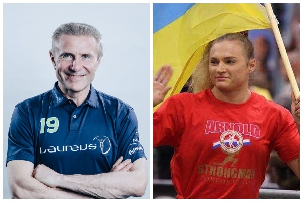Украина бесспорно умеет удивлять мир. Граждане нашей страны славятся силой, выносливостью, умом и креативом. Также в активе Украины есть несколько географических рекордов.
Дядя Жора собрал двадцатку самых ярких и самых необычных достижений украинцев, которые попали на страницы Книги рекордов Гиннеса.
-
Наибольшее количество мировых рекордов по легкой атлетике, установленных одним человеком
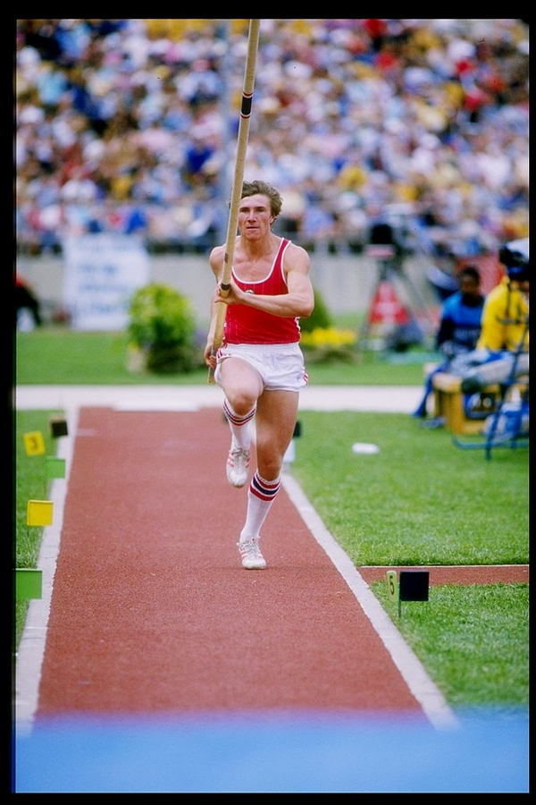Такой рекорд принадлежит нынешнему президенту НОК Сергею Бубке в прыжках с шестом. За свою блестящую карьеру в легкой атлетике спортсмен установил 17 мировых рекордов на открытом воздухе и 18 мировых рекордов в помещении. Всего 35 рекордов.
-
Первое сообщение с Земли, отправленное в другую звездную систему
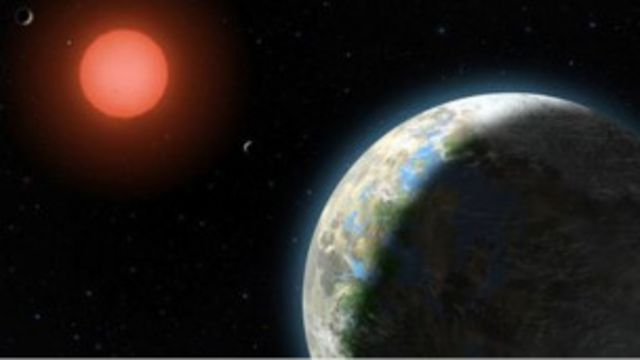9 октября 2008 года радиотелескоп РТ-70 в Евпатории отправил радиосообщение, нацеленное на планету Глизе 581 c, которая вращается вокруг звезды Глизе 581 в созвездии Весов, примерно в 20,3 световых лет от Земли. Сообщение содержит изображения известных достопримечательностей и людей Земли, а также 501 текстовое сообщение, присланное пользователями Bebo. Послание покинуло Солнечную систему всего за 20 часов, однако достичь планеты Глизе 581 оно сможет только в 2029 году.
-
Наибольшее количество олимпийских медалей в индивидуальных соревнованиях среди женщин
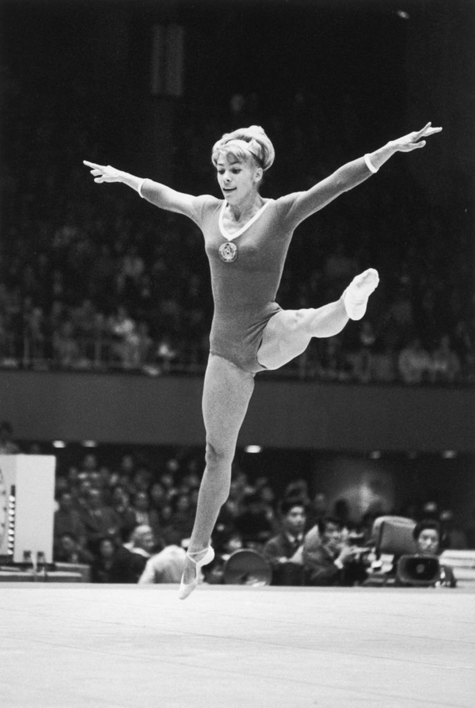Выступающая за СССР Лариса Латынина из Херсона завоевала рекордные 14 медалей в индивидуальных соревнованиях по спортивной гимнастике на Олимпийских играх с 1956 по 1964 год.
-
Самый большой урок археологии
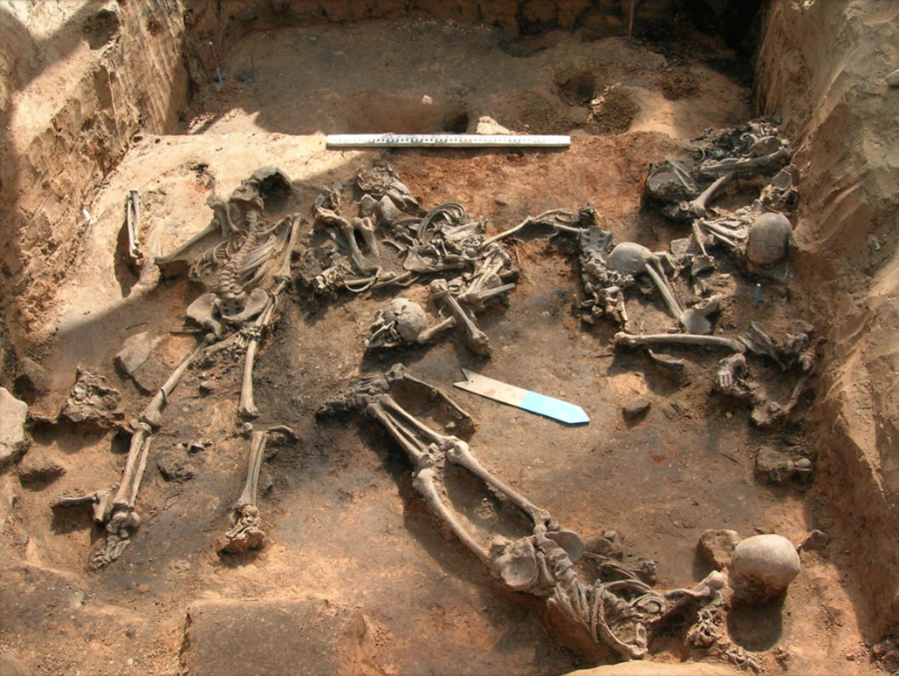10 октября 2019 года в Национальном университете «Острожская академия» состоялся самый крупный урок археологии, в котором приняли участие 299 человек.
-
Наибольшее количество ярового ячменя, посеянного за 24 часа
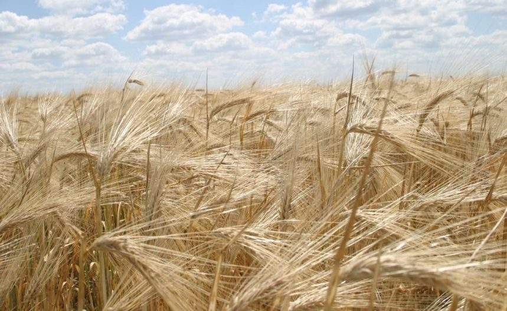74 347 килограмм семян ярового ячменя посеяли на площади 571,9 га в Днепропетровской области на ферме «Агро-Союз». Рекорд был установлен 23-24 апреля 2003 года.
-
Самая молодая победительница Бриллиантовой лиги
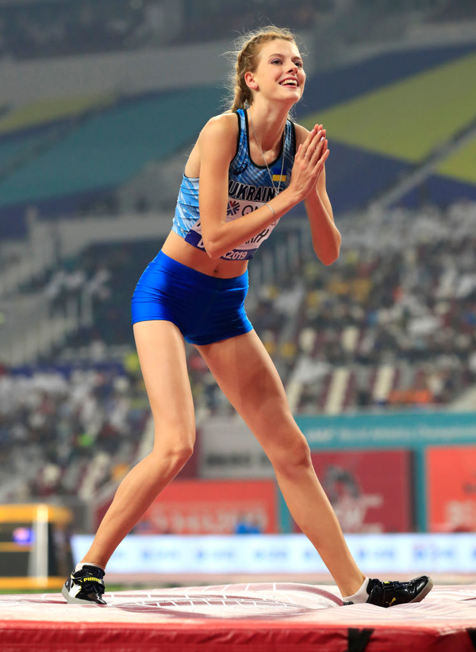Ярослава Магучих одержала победу в прыжках в высоту в Дохе, Катар, в 2019 году в возрасте 17 лет 226 дней.
-
Самая большая коллекция туалетных принадлежностей
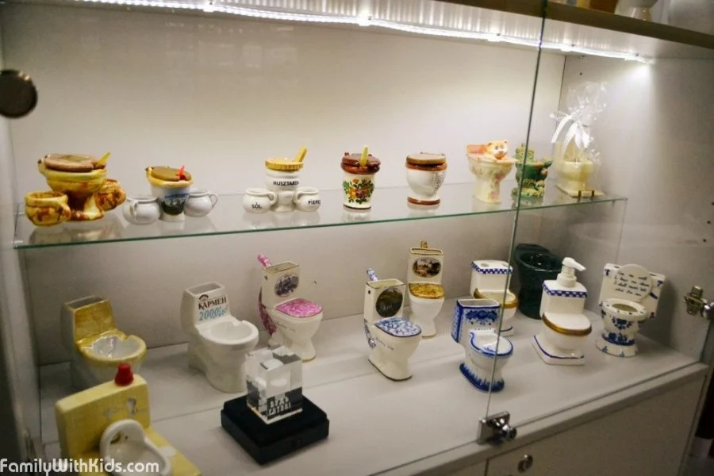Таким необычным рекордом могут похвастаться киевляне Марина и Николай Богданенко. Они увлеклись историей туалетной культуры после того, как в 1995 году открыли собственный магазин сантехники и керамической плитки. В коллекцию входят 524 предмета.
-
Самый большой самолет по весу за всю историю

Самолетом с самой высокой стандартной максимальной взлетной массой является Антонов Ан-225 «Мрия». Первоначально самолет был построен с массой 600 тонн, но в начале 2000-х после ремонта вес возрос до 640 тонн.
-
Самая юная чемпионка мира по дзюдо
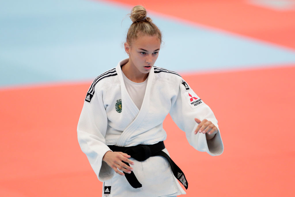Дарья Билодид выиграла чемпионат мира в 2018 году в категории до 48 кг в возрасте 17 лет 345 дней.
-
Жонглирование самым тяжелым весом
Наибольший общий вес жонглирования составляет 26,98 кг. Рекорд установил одесит Денис Ильченко на съемках Officially Amazing в Нэрне, Великобритания, 17 июля 2013 года.
-
Самый пожилой человек, переплывший Атлантику на веслах
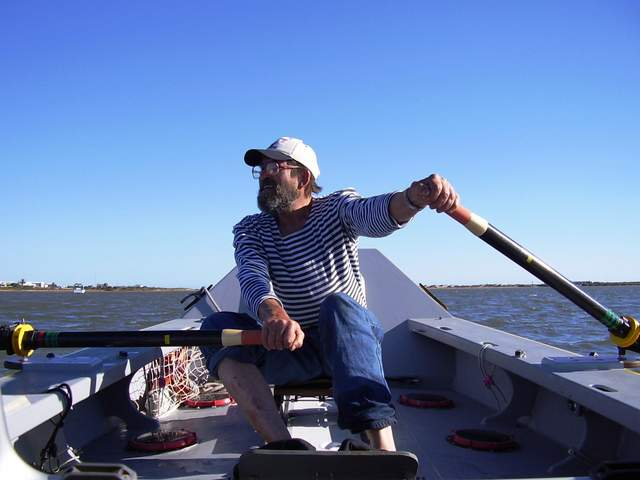Украинец Павел Резвой стал самым старым человеком, пересекшим океан. Он в одиночку переплыл Атлантику с востока на запад в марте 2004 году. На момент такого достижения мужчине было 65 лет и 53 дня.
-
Наибольшее количество флеккерлов за 30 секунд
25 флекерлов (танцевальное движение венского вальса) за 30 секунд сделала украинка Надежда Бычкова на съемках Strictly: It Takes Two в Элстри, Великобритания, 20 ноября 2020 года.
-
Максимальное время, проведенное в прямом контакте всего тела со снегом
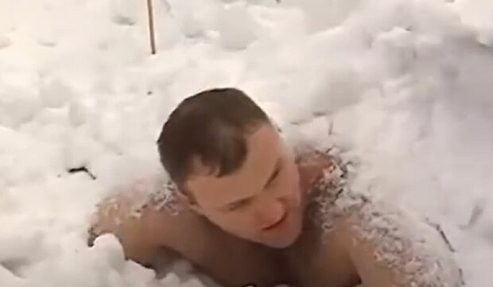60 минут 8 секунд пробыл под снегом без одежды Алексей Гуцуляк. Рекорд был установлен в городском парке имени Кирилла Трилевского в Коломыи 25 января 2013 года.
-
Самая большая радиоактивная зона отчуждения
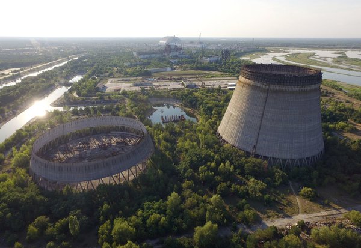Не самый приятный рекорд Украины, однако о нем не стоит забывать. Никакая другая зона отчуждения даже близко не может сравниться по размерам с Зоной отчуждения Чернобыльской АЭС площадью около 2600 квадратных километров.
-
Самая большая коллекция музыкальных инструментов из деревянных спичек
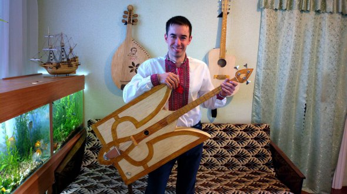Такая коллекция насчитывает 14 штук и была собрана Богданом Сенчуковым из Киева. Он создал аккордеон из 7000 спичек и гитару из 23000 спичек. Также в его коллекции есть баян, бас-гитара, барабан, скрипка, свирель, трещотка, бандура и другие инструменты.
-
Самый старый из ныне живущих теннисистов
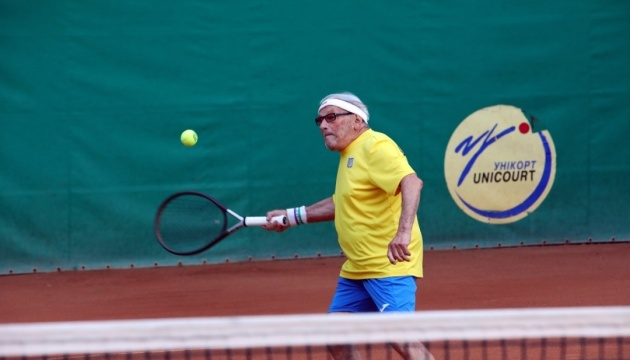Самый возрастным действующим теннисистом с октября 2020 года считается Леонид Станиславский из Харькова. На момент установления рекорда ему было 96 лет и 210 дней.
-
Самая большая коллекция предметов, связанных с божьими коровками
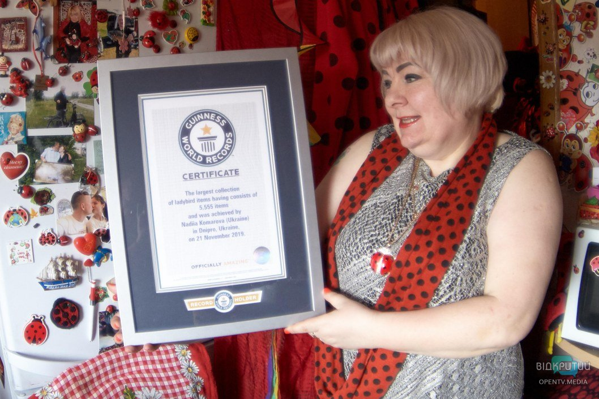Самая большая коллекция божьих коровок состоит из 5555 экземпляров и была собрана Надеждой Комаровой из Днепра в ноябре 2019 года.
-
Самая большая серебряная скульптура
Самая большая серебряная скульптура имеет высоту 2,52 м и ширину 1,97 м. Она полностью сделанная из стерлингового серебра, и весит 56,6 кг. Менора принадлежит Еврейскому Общинному Центру в Днепре. Рекорд зафиксировали в 2017 году.
-
Самая длинная гипсовая пещера
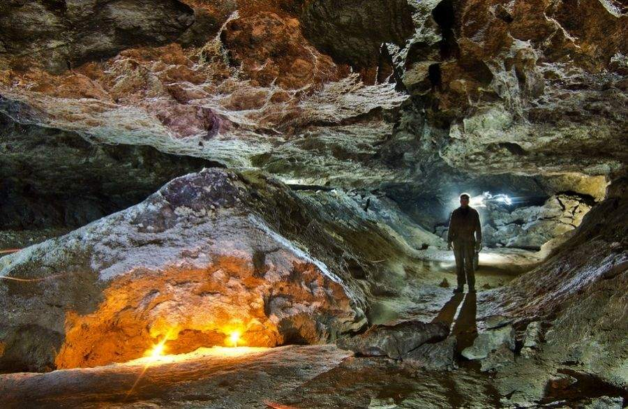Пещера Оптимистичная, что находится недалеко от Королевки, Тернопольская область, имеет длину 267 тысяч км.
-
Самое быстрое время, чтобы раздавить три арбуза бедрами
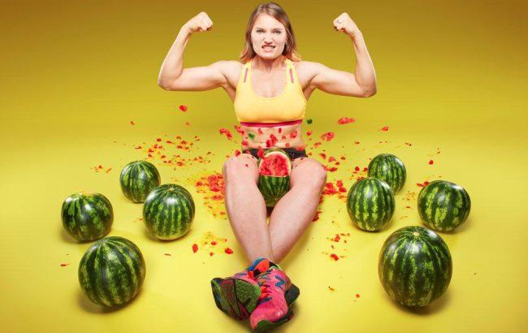26 июня 2014 года украинке Ольге Лящук в студии Mediaset Studios в Милане удалось показать наилучшее время, чтобы раздавить 3 арбуза между бедрами. Для этого ей понадобилось 14,65 секунд. Позже Ольга смогла улучшить свой результат до 7 секунд. Кроме того, Лящук носит звание самой сильной женщины на планете. Она может поднять любой предмет весом 200 кг и опрокинуть через себя каменный шар весом 140 кг.